运维
日志¶
错误日志¶
错误日志是 MySQL 中最重要的日志之一，它记录了当 mysqld 启动和停止时，以及服务器在运行过程中发生任何严重错误时的相关信息。
该日志是默认开启的，默认存放目录 /var/log/，默认的日志文件名为 mysqld.log 。查看日志位置
show variables like '%log_error%';
二进制日志¶
二进制日志（BINLOG）记录了所有的 DDL（数据定义语言）语句和 DML（数据操纵语言）语句，但不包括数据查询（SELECT、SHOW）语句
作用：
- 灾难时的数据恢复；
- MySQL的主从复制。
-- 查看日志目录
show variables like '%log_bin%';
log_bin_basename：当前数据库服务器的binlog日志的基础名称(前缀)，具体的binlog文 件名需要再该basename的基础上加上编号(编号从000001开始)。
log_bin_index：binlog的索引文件，里面记录了当前服务器关联的binlog文件有哪些。
日志格式
MySQL服务器中提供了多种格式来记录二进制日志
-- 查看日志格式
show variables like '%binlog_format%';
-- 在配置文件中修改 binlog_format 的值即可修改日志格式
| 日志格式 | 说明 |
|---|---|
| STATEMENT | 基于SQL语句的日志记录，记录的是SQL语句，对数据进行修改的SQL都会记录在日志文件中。 |
| ROW | 基于行的日志记录，记录的是每一行的数据变更。（默认） |
| MIXED | 混合了STATEMENT和ROW两种格式，默认采用STATEMENT，在某些特殊情况下会自动切换为ROW进行记录。 |
查看二进制日志
mysqlbinlog [ 参数选项 ] logfilename
参数选项：
-d 指定数据库名称，只列出指定的数据库相关操作。
-o 忽略掉日志中的前n行命令。
-v 将行事件(数据变更)重构为SQL语句
-vv 将行事件(数据变更)重构为SQL语句，并输出注释信息
删除日志
| 指令 | 说明 |
|---|---|
| reset master | 删除全部 binlog 日志，删除之后，日志编号，将 从 binlog.000001重新开始 |
| purge master logs to 'binlog.*' | 删除 * 编号之前的所有日志 |
| purge master logs before 'yyyy-mm-dd hh24:mi:ss' | 删除日志为 "yyyy-mm-dd hh24:mi:ss" 之前 产生的所有日志 |
Tip
也可以在mysql的配置文件中配置二进制日志的过期时间，二进制日志过期会自动删除。
show variables like '%binlog_expire_logs_seconds%';
查询日志¶
查询日志中记录了客户端的所有操作语句，而二进制日志不包含查询数据的SQL语句。默认情况下，查询日志是未开启的。
在配置文件中开启查询日志
#该选项用来开启查询日志 ， 可选值 ： 0 或者 1 ； 0 代表关闭， 1 代表开启
general_log=1
#设置日志的文件名 ， 如果没有指定， 默认的文件名为 host_name.log
general_log_file=mysql_query.log
慢查询日志¶
慢查询日志记录了所有执行时间超过参数 long_query_time 设置值并且扫描记录数不小于 min_examined_row_limit 的所有的SQL语句的日志，默认未开启。
在配置文件中开启慢查询日志
## 慢查询日志
slow_query_log=1
## 慢查询时间阈值
long_query_time=2
Info
默认情况下，不会记录管理语句，也不会记录不使用索引进行查找的查询。可以使用 log_slow_admin_statements 和更改此行为 log_queries_not_using_indexes
#记录执行较慢的管理语句
log_slow_admin_statements =1
#记录执行较慢的未使用索引的语句
log_queries_not_using_indexes = 1
主从复制¶
概述¶
主从复制是指将主数据库的 DDL 和 DML 操作通过二进制日志传到从库服务器中，然后在从库上对这些日志重新执行（也叫重做），从而使得从库和主库的数据保持同步。
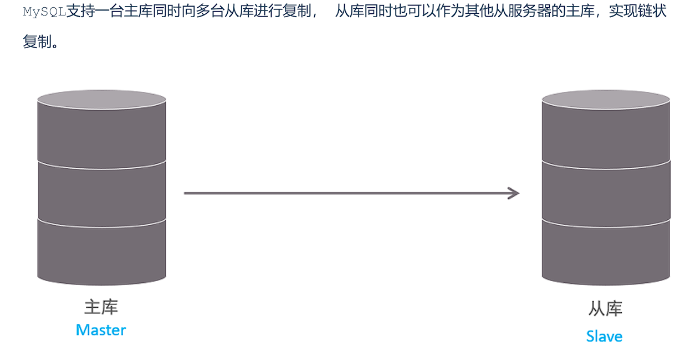
MySQL 主从复制的优点主要包含以下三个方面：
- 主库出现问题，可以快速切换到从库提供服务。
- 实现读写分离，降低主库的访问压力。
- 可以在从库中执行备份，以避免备份期间影响主库服务。
原理¶
MySQL主从复制的核心就是 二进制日志
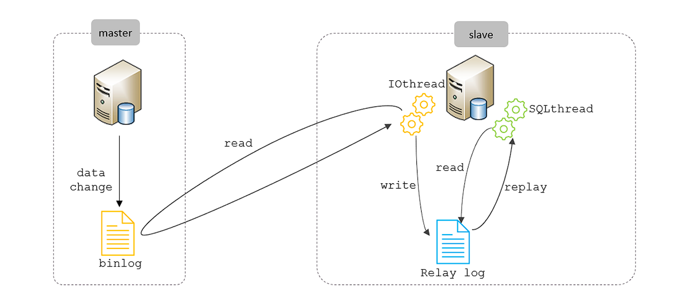
过程：
- Master 主库在事务提交时，会把数据变更记录在二进制日志文件 Binlog 中。
- 从库读取主库的二进制日志文件 Binlog ，写入到从库的中继日志 Relay Log 。
- slave重做中继日志中的事件，将改变反映它自己的数据。
搭建主从¶
主节点¶
主节点配置：
## mysql 服务ID，保证整个集群环境中唯一，取值范围：1 ~ (2^32-1)，默认为1
server-id=1
## 是否只读,1 代表只读, 0 代表读写
read-only=0
## 忽略的数据, 指不需要同步的数据库
## binlog-ignore-db=mysql
## 指定同步的数据库
## binlog-do-db=db01
创建远程连接用户
## 创建用户，并设置密码，该用户可在任意主机连接该MySQL服务
CREATE USER 'itcast'@'%' IDENTIFIED WITH mysql_native_password BY 'Root@123456';
## 为用户分配主从复制权限
GRANT REPLICATION SLAVE ON *.* TO 'itcast'@'%';
查看二进制日志坐标 show master status;，用于从节点配置
- file : 从哪个日志文件开始推送日志文件
- position ： 从哪个位置开始推送日志
- binlog_ignore_db : 指定不需要同步的数据库
从节点¶
配置文件
## mysql 服务ID，保证整个集群环境中唯一，取值范围：1 ~ (2^32-1)，和主库不一样即可
server-id=2
## 是否只读,1 代表只读, 0 代表读写
read-only=1
连接主节点
-- 8.0.23版本
CHANGE REPLICATION SOURCE TO SOURCE_HOST='主节点IP', SOURCE_USER='主节点授权用户',
SOURCE_PASSWORD='密码', SOURCE_LOG_FILE='binlog.000004',
SOURCE_LOG_POS=663;
开启同步
start replica ; #8.0.22之后
start slave ; #8.0.22之前
分库分表¶
概述¶
随着互联网及移动互联网的发展，应用系统的数据量也是成指数式增长，若采用单数据库进行数据存储，存在以下性能瓶颈：
- IO瓶颈：热点数据太多，数据库缓存不足，产生大量磁盘IO，效率较低。 请求数据太多，带宽不够，网络IO瓶颈。
- CPU瓶颈：排序、分组、连接查询、聚合统计等SQL会耗费大量的CPU资源，请求数太多，CPU达到瓶颈。
为了解决上述问题，我们需要对数据库进行分库分表处理。
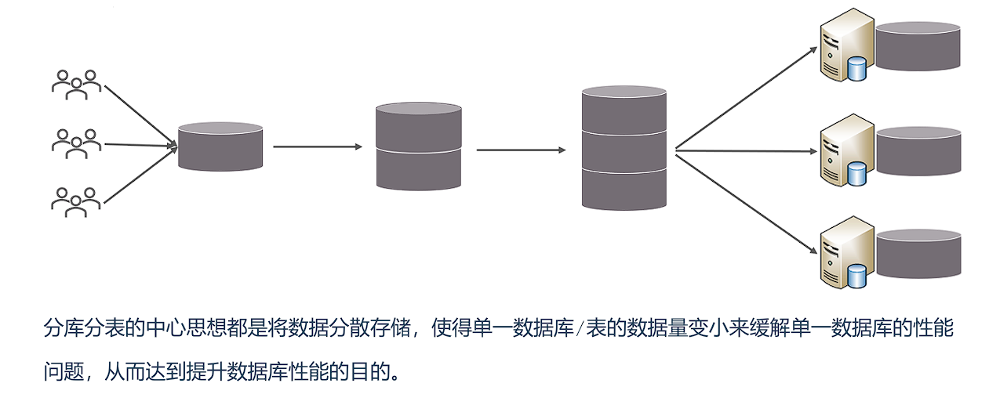
拆分策略¶
分库分表的形式，主要是两种：垂直拆分和水平拆分。
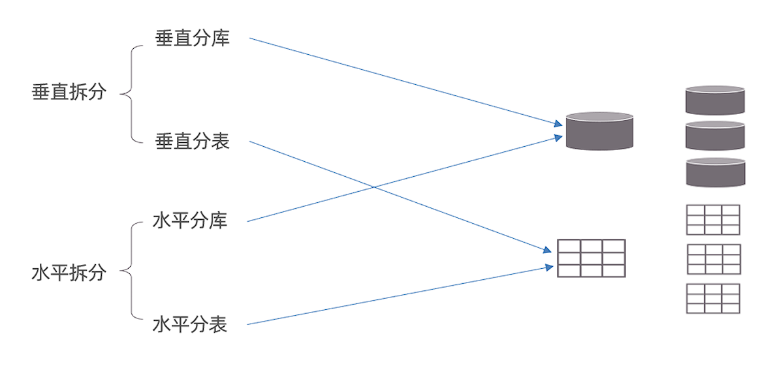
垂直拆分¶
垂直分库：以表为依据，根据业务将不同表拆分到不同库中。
特点：
- 每个库的表结构都不一样。
- 每个库的数据也不一样。
- 所有库的并集是全量数据。
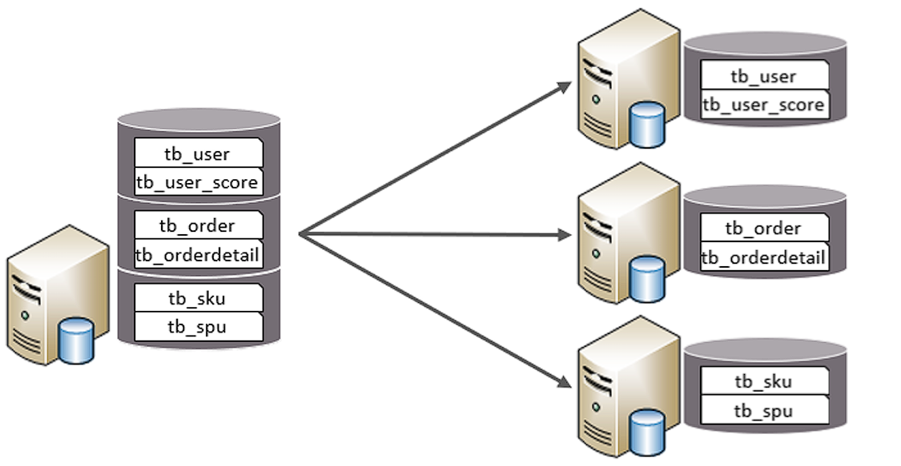
垂直分表：以字段为依据，根据字段属性将不同字段拆分到不同表中。
特点：
- 每个表的结构都不一样。
- 每个表的数据也不一样，一般通过一列（主键/外键）关联。
- 所有表的并集是全量数据。
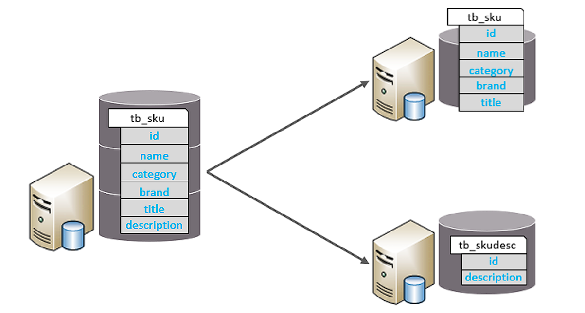
水平拆分¶
水平分库：以字段为依据，按照一定策略，将一个库的数据拆分到多个库中。
特点：
- 每个库的表结构都一样。
- 每个库的数据都不一样。
- 所有库的并集是全量数据。
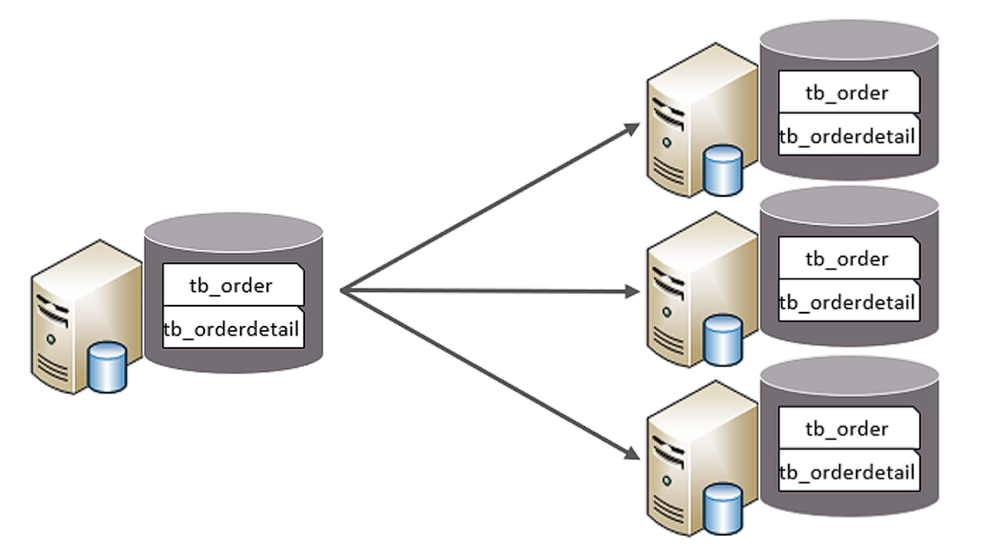
水平分表：以字段为依据，按照一定策略，将一个表的数据拆分到多个表中。
特点：
- 每个表的表结构都一样。
- 每个表的数据都不一样。
- 所有表的并集是全量数据。
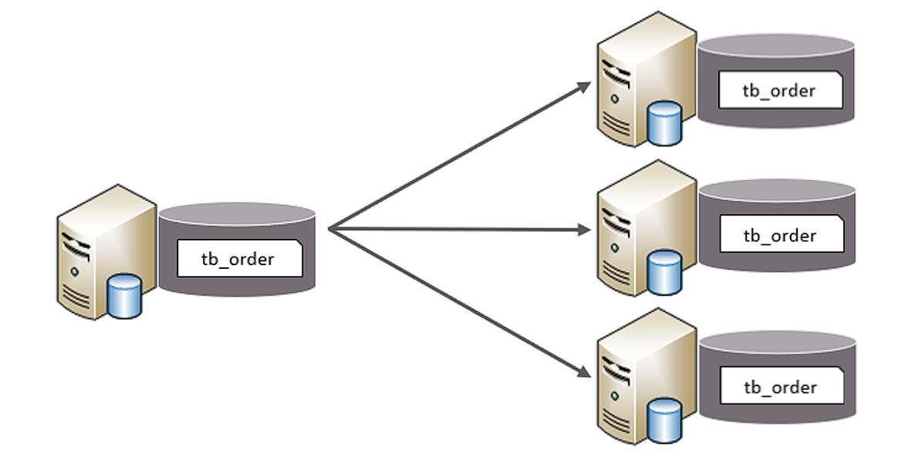
实现技术¶
- shardingJDBC：基于AOP原理，在应用程序中对本地执行的SQL进行拦截，解析、改写、路由处理。需要自行编码配置实现，只支持java语言，性能较高。
- MyCat：数据库分库分表中间件，不用调整代码即可实现分库分表，支持多种语言，性能不及前者。
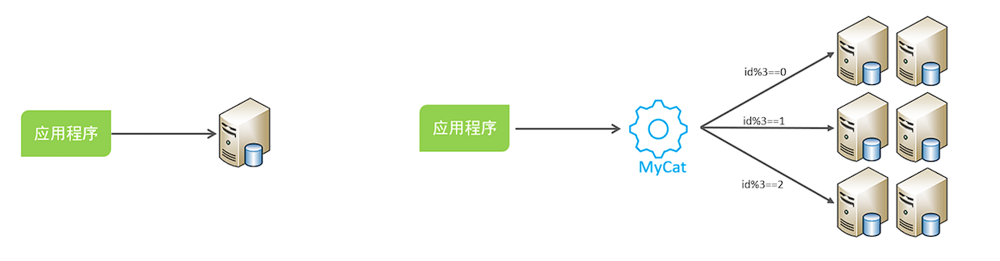
MyCat概述¶
安装后目录介绍
bin : 存放可执行文件，用于启动停止mycat
conf：存放mycat的配置文件
lib：存放mycat的项目依赖包（jar）
logs：存放mycat的日志文件
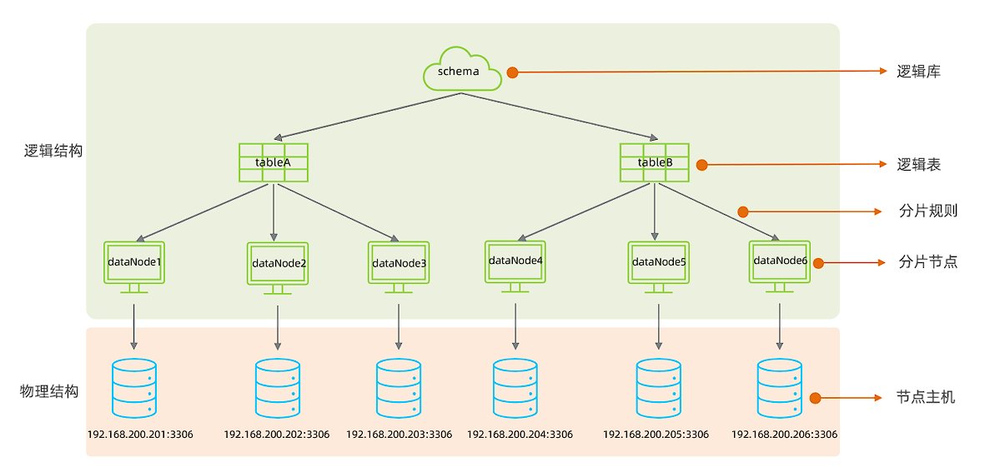
在MyCat的逻辑结构主要负责逻辑库、逻辑表、分片规则、分片节点等逻辑结构的处理，而具体的数据 存储还是在物理结构，也就是数据库服务器中存储的。
MyCat配置¶
schema.xml¶
schema.xml 作为MyCat中最重要的配置文件之一 , 涵盖了MyCat的逻辑库 、 逻辑表 、 分片规 则、分片节点及数据源的配置。
主要包含以下三组标签：
- schema标签
- datanode标签
- datahost标签
1.schema标签
定义逻辑库，一个MyCat实例中, 可以有多个逻辑库 , 可以通 过 schema 标签来划分不同的逻辑库。MyCat中的逻辑库的概念，等同于MySQL中的database概念。
主要属性：
- name：指定自定义的逻辑库库名
- checkSQLschema：在SQL语句操作时指定了数据库名称，执行时是否自动去除；true：自动去 除，false：不自动去除
- sqlMaxLimit：如果未指定limit进行查询，列表查询模式查询多少条记录
子标签：
-
table定义逻辑表
主要属性：
- name：定义逻辑表表名，在该逻辑库下唯一
- dataNode：定义逻辑表所属的dataNode，该属性需要与dataNode标签中name对应；多个 dataNode逗号分隔
- rule：分片规则的名字，分片规则名字是在rule.xml中定义的
- primaryKey：逻辑表对应真实表的主键
- type：逻辑表的类型，目前逻辑表只有全局表和普通表，如果未配置，就是普通表；全局表，配置为 global
2.datanode标签
主要属性：
- name：定义数据节点名称
- dataHost：数据库实例主机名称，引用自 dataHost 标签中name属性
- database：定义分片所属数据库
3.datahost标签
主要属性：
- name：唯一标识，供上层标签使用
- maxCon/minCon：最大连接数/最小连接数
- balance：负载均衡策略，取值 0,1,2,3
- writeType：写操作分发方式（0：写操作转发到第一个writeHost，第一个挂了，切换到第二 个；1：写操作随机分发到配置的writeHost）
- dbDriver：数据库驱动，支持 native、jdbc
rule.xml¶
rule.xml中定义所有拆分表的规则, 在使用过程中可以灵活的使用分片算法, 或者对同一个分片算法使用不同的参数, 它让分片过程可配置化。
主要包含两类标签：
- tableRule
- Function
server.xml¶
server.xml配置文件包含了MyCat的系统配置信息
主要有两个重要的标签：
- system
- user
1.system标签
主要配置MyCat中的系统配置信息
<property name="serverPort">8066</property> <!-- MyCat服务端口 -->
<property name="managerPort">9066</property> <!-- 管理端口 -->
<property name="charset">utf8</property> <!-- 默认字符集 -->
<property name="nonePasswordLogin">0</property> <!-- 是否允许空密码登录(0禁止) -->
<property name="processorBufferPoolType">0</property> <!-- 0:NIO,1:AIO -->
<property name="processorBufferLocalPercent">100</property> <!-- 线程池缓冲百分比 -->
<property name="frontSocketSoRcvbuf">1048576</property> <!-- 前端接收缓冲 -->
<property name="frontSocketSoSndbuf">4194304</property> <!-- 前端发送缓冲 -->
<property name="processors">16</property> <!-- 处理线程数 -->
<property name="defaultSqlParser">druidparser</property> <!-- SQL解析器 -->
<property name="sequnceHandlerType">1</property> <!-- 全局序列类型 -->
<property name="useOffHeapForMerge">0</property> <!-- 是否使用堆外内存 -->
<property name="memoryPageSize">1m</property> <!-- 内存页大小 -->
<property name="heartbeatTimeout">1000</property> <!-- 心跳超时(ms) -->
<property name="idleTimeout">1800000</property> <!-- 连接空闲超时(ms) -->
2.user标签
配置MyCat中的用户、访问密码，以及用户针对于逻辑库、逻辑表的权限信息
<user name="test" defaultAccount="true">
<property name="password">test123</property>
<property name="schemas">TESTDB</property> <!-- 可访问的schema -->
<property name="readOnly">false</property> <!-- 是否只读 -->
<property name="benchmark">1000</property> <!-- 权重 -->
<!-- 表级权限控制 -->
<privileges check="true">
<schema name="TESTDB" dml="0110">
<table name="t_user" dml="1111"></table>
</schema>
</privileges>
</user>
Tip
dml四位数字分别对应：insert(1位),update(2位),select(3位),delete(4位)
例如dml="0110"表示允许update和select
MyCat分片¶
全局表¶
全局表（Global Table）是 MyCat 中的一种特殊表类型，指在所有数据节点（分片节点）上都完全冗余存储的相同数据表。全局表主要用于解决跨分片 JOIN 的性能问题。
特点：
- 全节点冗余：所有数据节点都存储相同数据
- 实时同步：任何节点的修改都会同步到所有节点
- 跨分片JOIN优化：避免跨分片JOIN操作
- 读操作本地化：查询操作可在任意节点本地执行
- 写操作广播：写入操作会广播到所有节点
使用场景
- 数据字典表：如地区编码、系统参数等
- 配置表：系统配置、业务配置等
- 小数据量表：数据量小且更新不频繁的表
- 高频关联表：经常需要与其他表JOIN的维度表
<table name="t_area" primaryKey="id" type="global" dataNode="dn1,dn2,dn3"/>
分片规则¶
范围分片¶
根据指定的字段及其配置的范围与数据节点的对应情况， 来决定该数据属于哪一个分片。
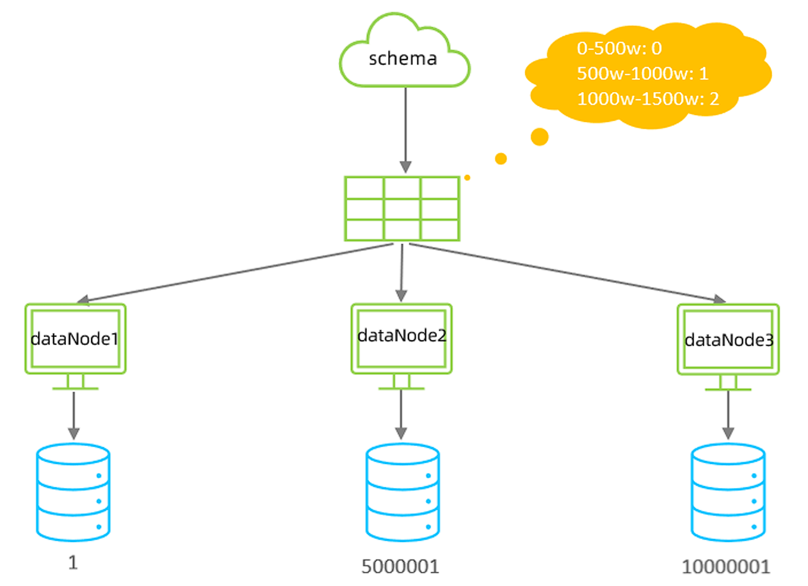
<table name="TB_ORDER" dataNode="dn1,dn2,dn3" rule="auto-sharding-long" />
取模分片¶
根据指定的字段值与节点数量进行求模运算，根据运算结果， 来决定该数据属于哪一个分片。
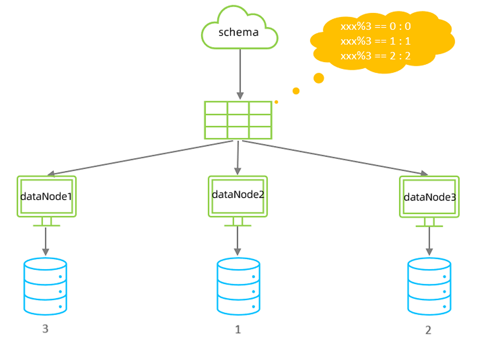
<!-- schema.xml -->
<table name="tb_log" dataNode="dn4,dn5,dn6" primaryKey="id" rule="mod-long" />
<!-- rule.xml -->
<tableRule name="mod-long">
<rule>
<columns>id</columns>
<algorithm>mod-long</algorithm>
</rule>
</tableRule>
<function name="mod-long" class="io.mycat.route.function.PartitionByMod">
<property name="count">3</property><!-- 节点数量 -->
</function>
Warning
该分片规则，主要针对于数字类型的字段适用
一致性hash分片¶
一致性哈希（Consistent Hashing）是MyCat提供的一种特殊分片算法，它解决了传统哈希分片在节点扩容/缩容时需要大量数据迁移的问题。
特点：
- 虚拟节点环：将哈希空间组织成环形结构
- 数据定位：通过哈希计算确定数据在环上的位置
- 节点映射：物理节点均匀映射到哈希环上
- 扩容影响小：节点变化只影响相邻节点数据
| 特性 | 一致性哈希 | 传统哈希 |
|---|---|---|
| 扩容影响 | 只影响相邻节点 | 影响所有节点 |
| 数据迁移量 | 约1/N（N为节点数） | 几乎全部数据 |
| 数据均衡性 | 依赖虚拟节点数 | 完全均衡 |
| 实现复杂度 | 较高 | 简单 |
配置
<!-- schema.xml -->
<table name="t_order" primaryKey="order_id" dataNode="dn1,dn2,dn3" rule="sharding-by-murmur"/>
<!-- rule.xml -->
<tableRule name="sharding-by-murmur">
<rule>
<columns>order_id</columns>
<algorithm>murmur</algorithm>
</rule>
</tableRule>
<function name="murmur" class="io.mycat.route.function.PartitionByMurmurHash">
<property name="seed">0</property> <!-- 哈希种子，默认0 -->
<property name="count">3</property> <!-- 物理节点数 -->
<property name="virtualBucketTimes">160</property> <!-- 虚拟节点倍数 -->
</function>
枚举分片¶
通过在配置文件中配置可能的枚举值, 指定数据分布到不同数据节点上, 本规则适用于按照省份、性 别、状态拆分数据等业务
<table name="tb_user" dataNode="dn4,dn5,dn6" rule="sharding-by-intfile-enumstatus" />
应用指定¶
运行阶段由应用自主决定路由到那个分片 , 直接根据字符子串（必须是数字）计算分片号
<table name="tb_app" dataNode="dn4,dn5,dn6" rule="sharding-by-substring" />
<tableRule name="sharding-by-substring">
<rule>
<columns>id</columns>
<algorithm>sharding-by-substring</algorithm>
</rule>
</tableRule>
<function name="sharding-by-substring" class="io.mycat.route.function.PartitionDirectBySubString">
<property name="startIndex">0</property> <!-- zero-based -->
<property name="size">2</property>
<property name="partitionCount">3</property>
<property name="defaultPartition">0</property>
</function>
固定分片hash算法¶
固定分片哈希算法（PartitionByLong）是 MyCat 中最常用的分片算法之一，它通过对分片字段值进行固定范围的哈希计算来确定数据分布。
- 固定范围分片：通过配置确定每个分片的数值范围
- 简单高效：直接基于数值计算，性能优异
- 均匀分布：数据在分片间均匀分布（取决于分片键）
- 可预测性：可以准确预判数据所在分片位置
<tableRule name="sharding-by-long">
<rule>
<columns>user_id</columns>
<algorithm>mod-long</algorithm>
</rule>
</tableRule>
<function name="mod-long" class="io.mycat.route.function.PartitionByLong">
<property name="partitionCount">2,1</property> <!-- 分片数量配置 -->
<property name="partitionLength">512,256</property> <!-- 分片范围配置 -->
</function>
| partitionCount | 是 | 分区间数量配置 | "2,1" 表示2个分区，第1个分区1份 |
|---|---|---|---|
| partitionLength | 是 | 每个分区的范围长度 | "512,256" 表示第1分区每份512，第2分区每份256 |
| hashSlice | 否 | 哈希取模部分字符串 | "0:2" 表示取前2个字符 |
字符串hash解析算法¶
截取字符串中的指定位置的子字符串, 进行hash算法， 算出分片。
<table name="tb_strhash" dataNode="dn4,dn5" rule="sharding-by-stringhash" />
<tableRule name="sharding-by-stringhash">
<rule>
<columns>name</columns>
<algorithm>sharding-by-stringhash</algorithm>
</rule>
</tableRule>
<function name="sharding-by-stringhash" class="io.mycat.route.function.PartitionByString">
<property name="partitionLength">512</property> <!-- zero-based -->
<property name="partitionCount">2</property>
<property name="hashSlice">0:2</property>
</function>
Tip
hashSlice: hash运算位 , 根据子字符串的hash运算 ; 0 代表 str.length() , -1 代表 str.length()-1 , 大于0只代表数字自身 ; 可以理解 为substring（start，end），start为0则只表示0
按天分片¶
按照日期及对应的时间周期来分片。
<table name="tb_datepart" dataNode="dn4,dn5,dn6" rule="sharding-by-date" />
<tableRule name="sharding-by-date">
<rule>
<columns>create_time</columns>
<algorithm>sharding-by-date</algorithm>
</rule>
</tableRule>
<function name="sharding-by-date" class="io.mycat.route.function.PartitionByDate">
<property name="dateFormat">yyyy-MM-dd</property>
<property name="sBeginDate">2022-01-01</property>
<property name="sEndDate">2022-01-30</property>
<property name="sPartionDay">10</property>
</function>
<!--
从开始时间开始，每10天为一个分片，到达结束时间之后，会重复开始分片插入
配置表的 dataNode 的分片，必须和分片规则数量一致，例如 2022-01-01 到 2022-12-31 ，每
10天一个分片，一共需要37个分片。
-->
按月分片¶
使用场景为按照月份来分片, 每个自然月为一个分片。
<table name="tb_monthpart" dataNode="dn4,dn5,dn6" rule="sharding-by-month" />
<tableRule name="sharding-by-month">
<rule>
<columns>create_time</columns>
<algorithm>partbymonth</algorithm>
</rule>
</tableRule>
<function name="partbymonth" class="io.mycat.route.function.PartitionByMonth">
<property name="dateFormat">yyyy-MM-dd</property>
<property name="sBeginDate">2022-01-01</property>
<property name="sEndDate">2022-03-31</property>
</function>
<!--
从开始时间开始，一个月为一个分片，到达结束时间之后，会重复开始分片插入
配置表的 dataNode 的分片，必须和分片规则数量一致，例如 2022-01-01 到 2022-12-31 ，一
共需要12个分片。--
MyCat管理¶
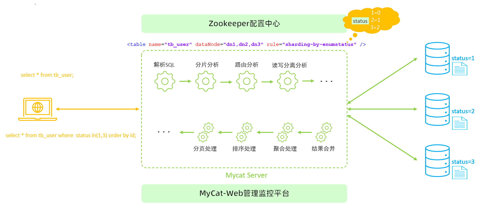
Mycat默认开通2个端口，可以在server.xml中进行修改。
- 8066 数据访问端口，即进行 DML 和 DDL 操作。
- 9066 数据库管理端口，即 mycat 服务管理控制功能，用于管理mycat的整个集群状态 连接MyCat的管理控制台
mysql -h 192.168.200.210 -p 9066 -uroot -p123456
| 命令 | 说明 |
|---|---|
show @@version; |
查看MyCat版本 |
show @@server; |
查看服务器状态 |
show @@threadpool; |
查看线程池状态 |
show @@processor; |
查看处理器状态 |
show @@connection; |
查看连接状态 |
show @@backend; |
查看后端连接状态 |
| 命令 | 说明 |
|---|---|
show @@datanode; |
查看数据节点信息 |
show @@datanode where schema=?' |
查看指定schema的节点 |
reload @@datanode |
重载数据节点配置 |
switch @@datasource name:index |
切换数据源(主从切换) |
| 命令 | 说明 |
|---|---|
show @@sql; |
查看当前执行的SQL |
show @@sql.slow; |
查看慢SQL |
show @@sql.sum; |
查看SQL执行统计 |
show @@sql.where id=? |
查看指定SQL详情 |
kill @@connection id1,id2,... |
终止指定连接 |
| 命令 | 说明 |
|---|---|
reload @@config |
重载所有配置文件 |
reload @@config_all |
重载所有配置并清理缓存 |
reload @@route |
重载路由配置 |
reload @@user |
重载用户权限 |
MyCat官方提供了一个管理监控平台MyCat-Web（MyCat-eye）。 Mycat-web 是 Mycat 可视化运维的管理和监控平台。
Note
MyCat-eye依赖zookeeper，需先安装zookeeper
读写分离¶
读写分离,简单地说是把对数据库的读和写操作分开,以对应不同的数据库服务器。主数据库提供写操作，从数据库提供读操作，这样能有效地减轻单台数据库的压力。
步骤：
- 配置MySQL主从复制（1主N从）
- 确保主从同步正常（
SHOW SLAVE STATUS检查） - 建议从库配置
read_only=1防止误写入
配置schema.xml
<?xml version="1.0"?>
<!DOCTYPE mycat:schema SYSTEM "schema.dtd">
<mycat:schema xmlns:mycat="http://io.mycat/">
<!-- 定义逻辑库 -->
<schema name="TESTDB" checkSQLschema="true" sqlMaxLimit="100">
<!-- 所有表默认使用读写分离 -->
<table name="tb1" primaryKey="id" dataNode="dn1"/>
</schema>
<!-- 定义数据节点 -->
<dataNode name="dn1" dataHost="localhost1" database="testdb" />
<!-- 定义数据主机 -->
<dataHost name="localhost1" maxCon="1000" minCon="10" balance="1" writeType="0" dbType="mysql" dbDriver="native" switchType="1" slaveThreshold="100">
<!-- 心跳检测SQL -->
<heartbeat>select user()</heartbeat>
<!-- 写节点(主库)配置 -->
<writeHost host="hostM1" url="192.168.1.100:3306" user="root" password="123456">
<!-- 读节点(从库)配置 -->
<readHost host="hostS1" url="192.168.1.101:3306" user="root" password="123456" />
<readHost host="hostS2" url="192.168.1.102:3306" user="root" password="123456" />
</writeHost>
<!-- 可配置备用写节点(主从切换时使用) -->
<!-- <writeHost host="hostM2" url="192.168.1.103:3306" user="root" password="123456"/> -->
</dataHost>
</mycat:schema>
| 参数 | 值 | 说明 |
|---|---|---|
| balance | 0 | 不开启读写分离 |
| 1 | 全部读操作随机分发到readHost | |
| 2 | 读操作按权重分发到所有host | |
| 3 | 读操作只分发到writeHost对应的readHost | |
| writeType | 0 | 所有写操作发送到第一个writeHost |
| 1 | 随机发送到writeHost | |
| switchType | 1 | 自动切换(默认) |
| 2 | 基于MySQL主从同步状态切换 | |
| 3 | 手动切换 |
多主从配置方式（高可用）
<dataHost ... balance="1" writeType="1">
<writeHost host="hostM1" url="master1:3306"...>
<readHost .../>
</writeHost>
<writeHost host="hostM2" url="master2:3306"...>
<readHost .../>
</writeHost>
</dataHost>
Tip
主节点之间也互为主从
完结撒花ヽ( •̀ ω •́ )✧